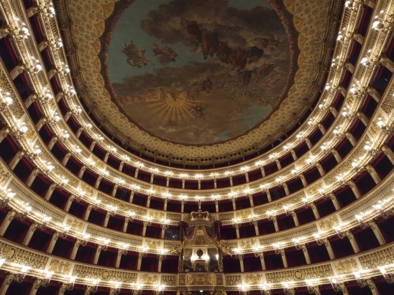
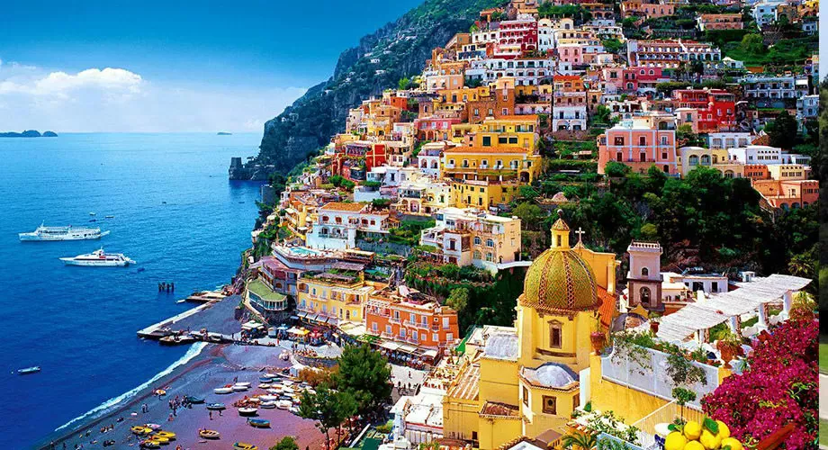
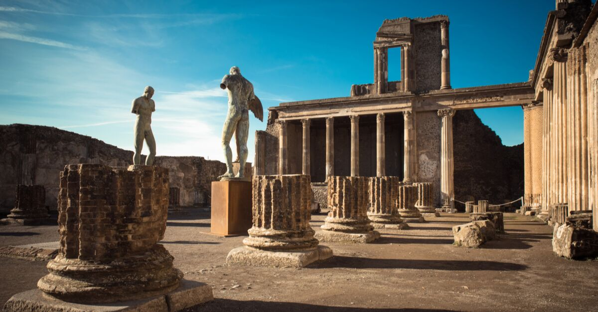

C’est le théâtre le plus important de la ville et l’un des plus conséquents. Ouvert en 1737, c’est aujourd’hui le théâtre d’opéra actif le plus ancien au monde et il est désormais inscrit au patrimoine mondial de l’UNESCO.
De Sorrento à Salerno, la côte amalfitaine est une des plus belles côtes d’Italie, d’Europe, et sans doute du monde. Des montagnes abruptes dévalent vers la mer Tyrrhénienne, où selon Homère le héros Ulysse rencontra autrefois les Sirènes… Dans ce paysage digne de la mythologie antique, une route étroite, sinueuse et majestueuse, dessert Positano, Amalfi, Ravello, des villages perchés comme des nids d’aigle entre mer et ciel. Repos des poètes, des artistes romantiques et des célébrités d’Hollywood, la côte Amalfitaine enchante aujourd’hui les touristes.
Pompéi, près de Naples, est le site archéologique le plus visité au monde grâce aux restes de la ville submergée des cendres de l’éruption du volcan en 79 après J.-C. qui causa sa destruction. Inscrit au Patrimoine Mondial de l’UNESCO en 1997, les site est depuis toujours un lieu de grand intérêt et fascination pour tous les passionnés d’histoire de l'antiquité.
